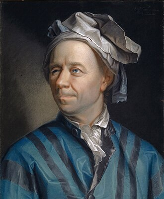

APSC 270 · Lecture 2
Review of Signals
Signals are the mathematical objects used to represent information. This lecture reviews important signals, operations that transform them, their basic classifications, and the complex-valued representation used throughout communications and signal processing.
Contents
1What is a signal?
A signal is a quantity that varies as a function of an independent variable.
Signal
A signal is a quantity (e.g., voltage, current, electric field, etc.) that varies as a function of an independent variable (e.g., time).
For a time-dependent signal, the independent variable is time and the signal is commonly written as \(x(t)\).
Signals in everyday life
- Audio signal
- Electrocardiogram (ECG) signal
- Brightness of an image
- Language (spoken, sign, or written)
- Count of customers in a coffee shop
Why are we studying signals?
In a communication system, signals are used to transmit information over a communication channel.
- In communications, we often see signals that are functions of time, written as \(x(t)\), where \(t\) denotes time.
- An information-bearing signal is a signal that contains information (for example, speech or video).
- It is important to understand the properties of signals and how signals are processed.
The lecture covers signals, signal operations, their properties, and special signals frequently encountered in communications.
2Some important signals
These elementary signals are useful building blocks for describing and analyzing communication systems.
Interactive: explore important signals
Choose a signalSinusoidal signal
A periodic signal that oscillates between \(-A\) and \(A\). Here, \(A\) is the amplitude, \(f_0\) is the frequency, and \(\theta\) is the phase.
Select any of the six signals to display its mathematical definition and corresponding waveform.
Important properties of the impulse signal
The impulse is an ideal mathematical model. Its unit-area property is more important than assigning it an ordinary finite amplitude.
Important property of signals: Energy and Power
For a signal \(x(t)\), it energy and power are defined as follows:
For a periodic signal \(x(t)\) with period \(T_0\), its average power can be calculated over one period:
- Nonzero average power implies infinite energy.
- Zero average power implies finite energy for the signal classes considered in this course.
Energy and Average Power
Blue shading: observation interval \( -T/2 \le t \le T/2 \). Green region: quantity being integrated, i.e., \(|x(t)|^2\).
3Basic operations on signals
Shifting, reversing, and scaling modify the signal along the time axis.
Compared to a given signal \(x(t)\):
Time shifting
the signal \(x(t-t_0)\) is shifted by \(t_0\):
- to the right (delayed) if \(t_0>0\).
- to the left (advanced) if \(t_0<0\).
- \(x(t+t_0)\) shifts in the opposite directions.
Time scaling
the signal \(x(at)\) is:
- contracted along the time axis if \(a>1\).
- expanded along the time axis if \(0 \lt a \lt 1\).
Time reversal
the signal \(x(-t)\) is time-reversed, i.e., flipped around the vertical axis.
Combined operation
the signal \( A\,x\!\left(a(t-t_0)\right)\) is amplitude-scaled by \(A\), time-scaled by \(a\), and time-shifted by \(t_0\).
Interactive: transform a signal
Shift · reverse · scaleThe reference signal is \(x(t)=t\) for \(0 \lt t \lt 1\), and zero otherwise. The transformed signal is \(y(t)=A\,x(a(t-t_0))\). Negative \(a\) produces time reversal as well as scaling.
4Classification of signals
Signals can be classified according to their independent variable, predictability, periodicity, time support, symmetry, and energy or power.
Interactive: classification of signals
Choose a propertyInteractive: even and odd decomposition
5Complex-valued signals
Complex numbers provide a compact representation of rotating sinusoids and are central to many signal-processing tools.
Complex numbers
Thus: \(a=r\cos(\theta), b=r\sin(\theta)\).
Euler's formula

Leonhard Euler(1707–1783)
Real-valued and complex-valued signals
- A real-valued signal takes values in \(\mathbb R\): \(x(t)\in\mathbb R\) for all \(t\).
- A complex-valued signal takes values in \(\mathbb C\): \(x(t)\in\mathbb C\).
An important example is the complex sinusoid:
Its real and imaginary parts are:
Its magnitude and phase are:
Interactive: complex number and rotating phasor
Complex sinusoidComplex plane
Real and imaginary parts versus time
The complex-plane plot shows the rotating phasor. The time-domain plot shows its real and imaginary projections: cosine and sine, respectively.
6Self-assessment quizzes
Check your understanding of signal definitions, operations, classifications, and complex-valued signals.
Select one answer for each question and check your results. You can retry each quiz as many times as you like.